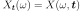
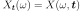
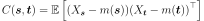
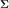
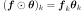
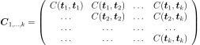

SecondOrderModel¶
-
class
SecondOrderModel(*args)¶ Second order model.
Notes
We consider
 a multivariate
stochastic process of dimension
a multivariate
stochastic process of dimension  , where
, where  is an event,
is an event,  is a domain of
is a domain of  ,
,
 is a multivariate index and
.
is a multivariate index and
.We note
 the random variable at
index defined by
 and
the random variable at
index defined by
 and
 a realization of the process
a realization of the process
 , for a given defined by
, for a given defined by
 .
.The SecondOrderModel class enable to get both spectral information of such process thanks to the
SpectralModelclass and spatial/temporal information using theCovarianceModelinformation.A SecondOrderModel object can be created only through its derived classes:
ExponentialCauchyMethods
computeCovariance(*args)Evaluate the covariance function. computeSpectralDensity(frequency)Evaluate the spectral density function for a specific frequency. discretize(timeGrid)Discretize the second order on a given RegularGrid/Mesh model using its covariance function. getClassName()Accessor to the object’s name. getCovarianceModel()Return the covariance model. getDimension()Get the dimension of the SecondOrderModel. getId()Accessor to the object’s id. getImplementation(*args)Accessor to the underlying implementation. getName()Accessor to the object’s name. getSpatialDimension()Get the spatial dimension of the spectral density function. getSpectralModel()Return the spectral model. setModels(covarianceModel, spectralModel)Set both the covariance and spectral models of a second order model. setName(name)Accessor to the object’s name. getInputDimension getOutputDimension -
__init__(*args)¶ Initialize self. See help(type(self)) for accurate signature.
-
computeCovariance(*args)¶ Evaluate the covariance function.
- Available usages:
computeCovariance(s, t)
computeCovariance(tau)
Parameters: - s, t : floats or sequence of floats.
Inputs.
- tau : float or sequence of floats.
Input.
Returns: - covariance : CovarianceMatrix
The evaluation of the covariance function.
Notes
computeCovariance evaluates the covariance model
 at
at
 :
:
- We note that the first usage calls the second as model is stationary. Thus,
 =
=  with
with
 .
.
-
computeSpectralDensity(frequency)¶ Evaluate the spectral density function for a specific frequency.
Parameters: - f : float
Frequency value.
Returns: - spd : HermitianMatrixs
The evaluation of spectral density function at frequency f.
Notes
computeSpectralDensity evaluates the spectral model
 at
at  :
:
where  is a covariance matrix that explains the covariance structure and 
-
discretize(timeGrid)¶ Discretize the second order on a given RegularGrid/Mesh model using its covariance function.
Parameters: - meshOrGrid :
MeshorRegularGrid Mesh or time grid of size
 associated with the process.
associated with the process.
Returns: - covarianceMatrix :
CovarianceMatrix Covariance matrix
 (if the process is of
dimension ).
(if the process is of
dimension ).
Notes
This method makes a discretization of the covariance model on meshOrGrid composed of the vertices
 and returns the
covariance matrix:
and returns the
covariance matrix:
- meshOrGrid :
-
getClassName()¶ Accessor to the object’s name.
Returns: - class_name : str
The object class name (object.__class__.__name__).
-
getCovarianceModel()¶ Return the covariance model.
Returns: - covarianceModel :
CovarianceModel The covariance model of the second order model.
- covarianceModel :
-
getDimension()¶ Get the dimension of the SecondOrderModel.
Returns: - dimension : int
Dimension of the SecondOrderModel.
-
getId()¶ Accessor to the object’s id.
Returns: - id : int
Internal unique identifier.
-
getImplementation(*args)¶ Accessor to the underlying implementation.
Returns: - impl : Implementation
The implementation class.
-
getName()¶ Accessor to the object’s name.
Returns: - name : str
The name of the object.
-
getSpatialDimension()¶ Get the spatial dimension of the spectral density function.
Returns: - spatialDimension : int
SpatialDimension of the SecondOrderModel.
-
getSpectralModel()¶ Return the spectral model.
Returns: - spectralModel :
SpectralModel The spectral model of the second order model.
- spectralModel :
-
setModels(covarianceModel, spectralModel)¶ Set both the covariance and spectral models of a second order model.
Parameters: - covarianceModel :
CovarianceModel The covariance model of the second order model.
- spectralModel :
SpectralModel The spectral model of the second order model.
- covarianceModel :
-
setName(name)¶ Accessor to the object’s name.
Parameters: - name : str
The name of the object.
-